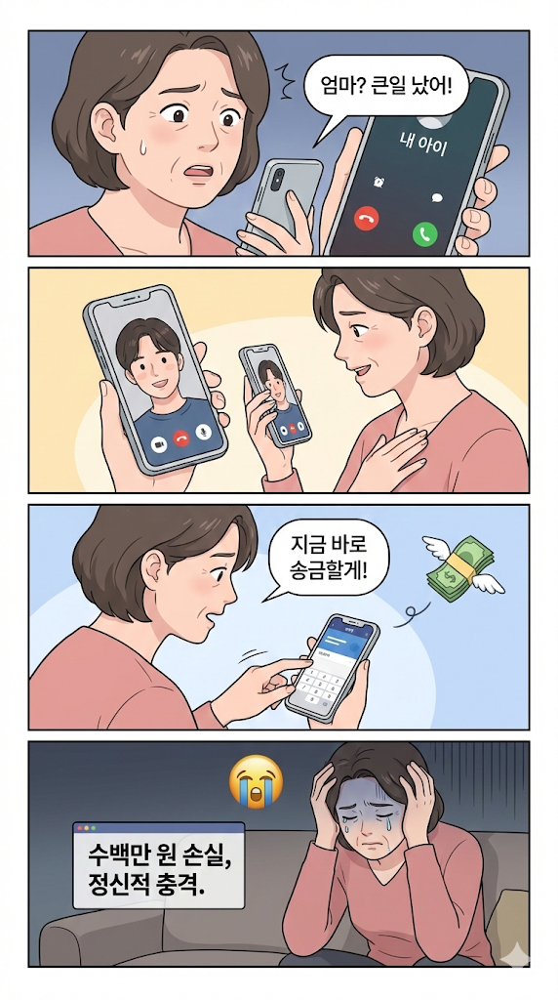
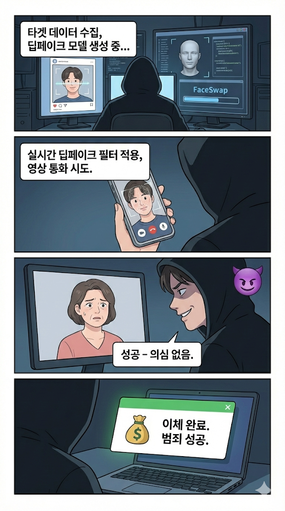
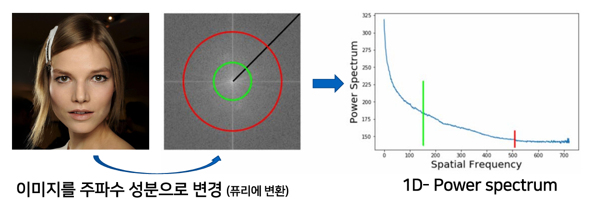
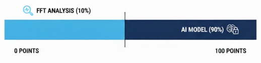
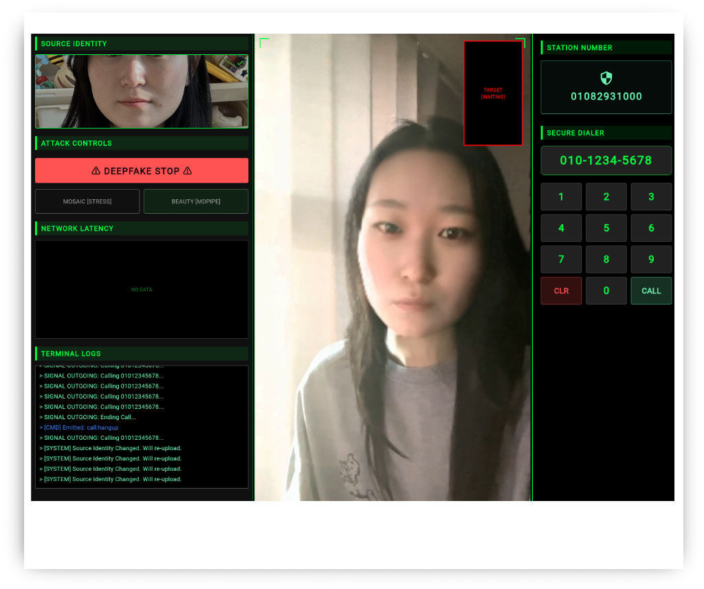

GARIM PROJECT
"가려낼수록 선명해지는 진실,
가릴수록 안전해지는 대화"
Team Garim
진짜 일론머스크
진짜 일론머스크
⚠️ 누구나, 사진 한 장으로, 범죄 가능
실제 피해 사례
지인 사칭 피싱
"엄마 급한데 돈 좀 보내줘"
자녀 얼굴 실시간 합성 → 영상통화 → 금전 요구
로맨스 스캠
AI 가상인물로 위장
데이팅 앱 → 친밀감 형성 → 투자 유도
기업 임원 사칭
CEO 얼굴 도용 → 긴급 화상회의 → 송금 지시 → 수억원 편취
🚨 디지털 시대의 새로운 위협
📈 딥페이크 범죄 폭발적 증가 추이
*전 세계 딥페이크 관련 금융 피해 규모 (단위: 원)
"범죄 도구의 민주화" - 누구나 쉽게 딥페이크를 만들 수 있는 시대
AI 기술 발전 속도 >> 보안 대응 속도
왜 "가림"인가?
가림 = "가려서 지키다"
딥페이크라는 거짓을 가려내고,
사용자의 진실된 소통을 지킨다는 의미를 담았습니다.
Garim-Eye (방어)
실시간으로 딥페이크를 탐지하여
사용자를 보호하는 "눈"
Garim-Attack (검증)
실제 딥페이크 공격을 시뮬레이션하여
시스템의 신뢰성을 "검증"
"디지털 시대, 진실을 가려내는 방패가 되겠습니다"
디지털 소통의
무결성을 지키다
가림-아이(Garim-Eye)
"기술로 지키고, 경험으로 깨우다"
On-Device
개인정보 서버 전송 없이
사용자 폰에서 즉시 분석
Real-time
통화 중 실시간으로
딥페이크 즉시 탐지
User-Aware
사용자 스스로
의심하고 확신하게
📊 시장 분석 및 경쟁 우위
🔍 유사 서비스 현황
🌐 클라우드 기반 솔루션
• Microsoft Video Authenticator
• Deepware Scanner
• Sensity AI
문제점: 영상 업로드 필요 → 개인정보 유출 위험, 실시간 불가능
📱 온디바이스 솔루션
현재 사실상 부재
가림의 기회: 실시간 + 온디바이스 + 개인정보 보호를 모두 만족하는 유일한 솔루션
🎯 가림의 핵심 차별점
완전한 프라이버시
영상 데이터 서버 전송 없음
실시간 탐지
통화 중 즉시 경고
하이브리드 AI
그 비결이 궁금하신가요? (Next)
📱 왜 온디바이스(On-device)인가?
🚫 서버(Cloud) 방식의 한계
-
개인정보 유출 위험:
사용자의 지극히 사적인 통화 영상이 외부 서버로 전송되어야 함. -
네트워크 지연(Latency):
영상 전송 → 서버 분석 → 결과 수신 과정에서 수백ms 지연 발생. 실시간 대응 불가능. -
비용 문제:
실시간 영상 처리를 위한 막대한 GPU 서버 비용 발생 (B2C 무료 제공 불가).
✅ 가림의 온디바이스 솔루션
-
완벽한 프라이버시:
영상 데이터가 폰 밖으로 단 1비트도 나가지 않습니다. -
Zero Latency:
네트워크 상태와 무관하게 0.08초(80ms) 내에 탐지 및 경고. -
비용 효율성:
사용자의 NPU를 활용하므로 서버 비용 0원. 지속 가능한 모델.
"보안을 위해 또 다른 보안 위협(서버 전송)을 만들지 않습니다."
🎭 공격자와 피해자의 시나리오

⚠️ 이런 피해를 막기 위해 가림-아이가 필요합니다

💡 이렇게 쉽게 범죄가 성공합니다
⚔️ 공격자의 시나리오에서 시작된 방어 전략
공격 시나리오
🎯 Target & Goal
지인 사칭 및 금전 갈취
(Social Engineering via Video Call)
🔥 Attacker's Needs
-
⚡ 실시간성 (Real-time):
지연 시간 없는 즉각적인 대화 -
📱 접근성 (Accessibility):
고가의 장비 없는 일반 PC/모바일 구동 -
🏹 효율성 (Efficiency):
사진 한 장으로 끝내는 'One-shot' 방식
대응 전략
수립
전략적 선택
🤖 전략적 모델 선정 (Why 'inswapper'?)
-
공격자의 최애 도구:
현재 가장 빠르고 정교한 One-shot 엔진 선정 -
실전 타겟팅:
연구용 고성능 모델(SOTA)이 아닌,
실제 범죄 현장에서 쓰이는 기술을 우선 타겟
📊 데이터셋 구축 전략
-
환경의 일치 (Realism):
스튜디오가 아닌, 저화질/조명/흔들림 등
'열악한 통화 환경' 집중 재현 -
결함 포착 (Defects):
실시간 합성의 약점(프레임 불일치, 경계면) 학습
🏭️ 가림-아이 탐지 아키텍처
📹 실시간 영상 캡처
WebRTC 화상통화 중 영상 프레임을 실시간으로 추출 (20fps)
🔬 하이브리드 이중 분석
주파수 도메인에서 GAN 아티팩트 검출 (0.05초)
시계열 특징 분석 및 부자연스러움 탐지
📊 신뢰도 점수 산출
FFT + CNN 점수를 가중 평균하고, EMA(지수 이동 평균) 적용하여 최종 신뢰도 계산 (0-100점)
🚨 사용자에게 의심 유도
SAFE (70~100): 정상 / WARNING (30~69): 주의 문구 / DANGER (0~29): 강력 경고 UI
🔄 WebRTC 기반 실시간 화상통화 환경 구현
실제 화상통화 프로토콜(WebRTC P2P)을 사용하여
현실과 동일한 조건에서 공격 시뮬레이션 및 방어 테스트 진행
능동적 검증 (Interactive Verification)
🤝 Human-in-the-loop Security
AI 탐지 모델이 100% 완벽할 수는 없습니다.
가림아이(Garim Eye)는 기술적 탐지 결과를 근거로 사람의 직관(Intuition)을 개입시켜 최종 판단을 내리는 하이브리드 검증 시스템입니다.
1. Occlusion Test
"얼굴 앞으로 손을 흔들어보라고 하세요."
대부분의 실시간 딥페이크 모델은 얼굴 앞에 물체가 지나갈 때(가림 현상) 합성이 풀리는 취약점이 있습니다.
2. Profile Check
"고개를 좌우로 천천히 돌려보세요."
정면 얼굴 데이터로만 학습된 저가형 피싱 모델은 측면(Profile)에서 급격히 화질이 무너집니다.
3. Lighting Shift
"휴대폰 조명을 켜보세요."
실제 얼굴은 조명 변화에 따라 그림자가 자연스럽게 변하지만, 합성된 얼굴은 그림자가 고정되어 있습니다.
Garim-Eye: 지능형 방어 클라이언트
📱 앱 데이터 처리 흐름 및 최적화
(HWC → CHW)
(Thermal Control)
⚡ 입력 파이프라인 최적화 (Input Pipeline)
Zero-Copy Resize: iOS vImage 프레임워크를 사용하여 YUV 데이터를 2ms 만에 변환 및 리사이징.
Memory Layout: NPU가 선호하는 CHW 포맷으로 입력 단계에서 미리 변환하여 추론 부하 제거.
🌡️ 적응형 발열 제어 (Adaptive Thermal Control)
Dynamic Interval: 기기 발열 상태에 따라 추론 주기를 1.25s ~ 10s로 자동 조절.
Smart Wake-up: 이상 징후(FFT) 감지 시 즉시 'Burst Mode'로 전환하여 정밀 방어 수행.
데이터셋 구축 (Dataset Construction)
📦 Stage 1: AI-Hub 원본 데이터 확보
- 영상: AI-Hub 딥페이크 변조영상 248개
- 이미지: 한국인 안면 랜드마크 이미지 2,250장
🎭 Stage 2: 영상 전처리 (Quality Enhancement)
Step1: 30초 영상을 10초씩 분할 → 496개 영상 확보
Step2: 최종 얼굴 크롭영상 획득
Step3: 네트워크 환경 대응 3가지 화질 생성
Step4: Flip, Network Stress, Beauty Filter
🤖 Stage 3: 딥페이크 영상 생성
- 도구: Inswapper (One-shot Face Swapping)
- 생성: Google Colab에서 위의 이미지 전체 동원 생성
✅ Stage 4: 최종 데이터셋
Split Ratio: Train(80%: 4,800개) : Validation(10%: 576개) : Test(10%: 576개)
FFT: 영상 데이터를 '주파수'라는 성분으로 분해하는 기술
🌊 1D-Power Spectrum
이미지를 주파수 성분으로 변환
(퓨리에 변환)

🎯 FFT 활용 전략
"단 하나의 가짜도 놓치지 않는다"
FFT ANALYSIS (10%) ―― AI MODEL (90%) 🤖

사용한 FFT 분석 로직:
1단계: [함수 1] analyze_face_fft - "디지털 지문 채취"
이 함수는 영상의 얼굴 이미지를 받아 '인간의 피부인지, AI의 가공물인지'를 수치로 변환합니다.
• Power Spectrum 계산 및 정규화
• 고주파 영역 에너지 측정
2단계: [함수 2] get_base_confidence - "화질별 상대 평가"
"고화질 가짜가 저화질 진짜보다 점수가 높을 수 있다"는 문제를 해결하는 로직입니다.
각 화질 체급에서 '나올 수 있는 최상의 선명도'를 기준으로 상대적인 점수(0~10점)를 매깁니다.
【데이터 기반 임계값(Threshold) 설정 근거】
신뢰도 산출의 기초가 되는 화질별 기준값은 약 10,000개의 영상 데이터셋에 대한 전수 조사를 통해 얻은 FFT Score를 기반으로 도출되었습니다.
| 화질 | 허한선(Low) | 기준선(Mid) | 상한선(High) |
|---|---|---|---|
| 360p | 800점 | 1100점 | 1750점 |
| 480p | 850점 | 1250점 | 1850점 |
| 608p | 900점 | 1400점 | 1950점 |
| 720p | 1000점 | 1600점 | 2100점 |
사용한 FFT 분석 로직:
3단계: [함수 3] get_final_trust_score - "냉혹한 보안관"
기초 점수가 높게 나와도 수상한 흔적이 보이면 가차 없이 점수를 깎아버리는 최종 관문입니다.
🔍 필터 1: 질감 페널티 (Texture Penalty)
점수가 높아도 피부가 도자기처럼 너무 매끈하면 (avg_var < 5000), "너 AI지?" 하고 점수를 30% 깎습니다.
📊 필터 2: 안정성 페널티 (Stability Penalty)
프레임마다 선명도가 들쑥날쑥하면 (std > 15%), "합성이 불안정하네?" 하고 점수를 반토막(50%) 냅니다.
🔒 필터 3: Safety Lock (확정)
점수가 7점을 넘으려 할 때, 조금이라도 의심스러우면 강제로 6.9점에 가둡니다.
사용한 FFT 분석 로직:
🔄 4단계: 실행 루프
📹 샘플링 방식: 5프레임
영상에서 5개 프레임을 추출하여 FFT 분석을 수행하고, 평균 신뢰도를 계산합니다.
# 5프레임 샘플링 분석
f_scores, f_vars = [], [] for _ in range(5): ret, frame = cap.read() if ret: s, v = analyze_face_fft(frame) f_scores.append(s); f_vars.append(v) cap.release()
✅ 5단계: 분석 결과 적용
최종 신뢰도 점수를 바탕으로 시스템 동작 모드를 결정합니다.
• 10.0 → Ultra Pass (Skip Stage 2)
• 7.0-9.9 → Safe Real (Stage 2)
• 3.0-6.9 → Analysis Zone (Stage 2)
• 0.0-2.9 → High Risk (Stage 2)
Model Architecture: 하이브리드 구조
Video Input
(20, 224, 224, 3)
MobileNetV2
각 프레임의 시각적 특징 추출
ImageNet Backbone
Global Avg Pooling
특징맵 → Vector
차원 압축
LSTM
시간적 상관관계 분석
64 Units
Decision Head
Real vs Fake
Sigmoid Output
📥 Input Spec
- • 20 Frames (연속 프레임)
- • 224×224 Resolution
- • RGB 3 Channels
⚙️ Architecture
- • TimeDistributed CNN
- • LSTM (64 units)
- • Dropout(0.5) + Dense
📤 Output
- • Sigmoid Activation
- • 0.0 (Real) ~ 1.0 (Fake)
- • Binary Classification
최적화 및 트러블슈팅
| Challenges | Strategies |
|---|---|
|
1. 클래스 불균형 및 오판 발생
초기 모델이 진짜(Real) 영상을 가짜로 오판하는 경향, 실생활 사용성 저하 우려 |
정밀 미세 조정 (Fine-tuning)
• 기초 특징 보존, 딥페이크 특유 이상징후만 학습 |
|
2. Core ML 변환 호환성 문제
Keras 모델 직접 변환 시 레이어 이름 충돌 및 시퀀스 데이터 처리 오류 발생 |
SavedModel 경유 변환
• 직접 변환 대신 SavedModel 포맷 경유 |
|
3. 모바일 리소스 제약
고용량 모델 구동 시 메모리 점유율 상승 및 추론 속도 저하 문제 |
Int8 선형 양자화
• 모델 용량 75% 절감 |
Input Spec: 224×224, 20 Frames | Optimizer: Adam (10-5)
최종 성능 평가
📊 Performance Comparison
| 구분 | Keras (원본) | Core ML (최종) |
|---|---|---|
| 정확도 (Accuracy) | 90.36% | 88.97% |
| Real 정답 수 ( / 575개) |
508개 | 519개 (개선됨 ✓) |
| Fake 정답 수 ( / 576개) |
532개 | 505개 |
| F1-Score (Fake 기준) |
0.91 | 0.89 |
💡 Key Insights
- ✓ CoreML 변환 후 전체 정확도 1.39%p 감소
- ✓ Real 탐지 성능 향상: 508→519개 정답 (오탐 감소)
- ✓ 온디바이스 추론 속도: 평균 650ms→250ms (실시간 구동 가능)
- ✓ 모델 용량: Int8 양자화로 75% 절감
검증 도구: 가상 공격 시뮬레이터

[Figure] Attacker's Dashboard
🔴 Garim-Attack
Garim-Eye(방어)의 성능을 검증하기 위해, 우리는 실제 피싱범과 동일한 환경을 구축했습니다.
-
WebRTC P2P 기반:
정지 영상(mp4)이 아닌, 네트워크 패킷 손실과 지연이 발생하는 실시간 스트리밍 환경에서 공격을 시도합니다. -
Real-time Face Swap:
서버 사이드 렌더링을 통해 고화질 딥페이크 영상을 피해자에게 전송합니다.
Phase 1: Attack Initiated
공격자가 Face Swap을 켜고 통화를 시도합니다. 육안으로는 구별이 불가능합니다.
Phase 2: Defense Active
Garim-Eye가 미세한 떨림을 감지하고 DANGER 경고를 띄웁니다.
시스템 시연
차별점 및 경쟁력
| 비교 항목 | Other Server-based Solutions | Garim Project (Mobile) |
|---|---|---|
| 탐지 정확도 (Precision) | 96% (High) | 88% (Trade-off) |
| 접근성 (Accessibility) | 고성능 PC/서버 필수 | 모든 스마트폰에서 즉시 실행 |
| 개인정보 보호 (Privacy) | 서버 업로드 필수 (유출 위험) | 완전 차단 (데이터가 폰 밖으로나가지 않음) |
| 모델 효율성 (Efficiency) | Heavy (고비용 GPU 연산) | Ultra-Light (MobileNetV2 경량화) |
| 타켓 환경 | 고화질 영상 원본 | 저화질 스트리밍 (Real-world) |
수익화 전략 (Revenue Strategy)
🏢 B2B: Garim Guard API
영상 통화 기능을 가진 서비스 업체(데이팅 앱, 메신저 등)에 SDK 형태의 보안 모듈을 공급합니다.
- Target: 데이팅 앱, 화상 영어/과외 플랫폼, 랜덤 채팅
- Model: API Call 당 과금 (Usage-based Pricing)
- Value: 플랫폼의 신뢰도 상승 및 허위 유저(Bot) 차단
👤 B2C: 인플루언서 보호 (Influencer Protection)
이미지와 영상이 공개된 인플루언서 및 크리에이터를 위한 능동적 딥페이크 탐지 및 디지털 저작권 보호 서비스.
- 24/7 Monitoring: SNS, 커뮤니티, 성인 사이트 내 불법 합성물 실시간 탐지
- Auto-Takedown: 채증 자료 자동 생성 및 플랫폼 신고/삭제 요청 자동화
- Verified Badge: 'Garim Protected' 안심 인증 마크 제공
향후 로드맵 (Future Roadmap)
Audio Deepfake
목소리 변조(Voice Cloning) 탐지 기술 통합. 영상과 음성을 교차 검증하여 정확도 99% 달성.
LVM Hybrid Cloud
온디바이스 판단이 불확실할 경우(Gray Zone), 선택적으로 클라우드 거대 모델(LVM)에 정밀 분석 요청.
Global Expansion
영어/일본어권 서비스 런칭. 글로벌 데이팅 앱 시장(Tinder, Bumble) 파트너십 추진.
Thank You
가려낼수록 선명해지는 진실, 가릴수록 안전해지는 대화